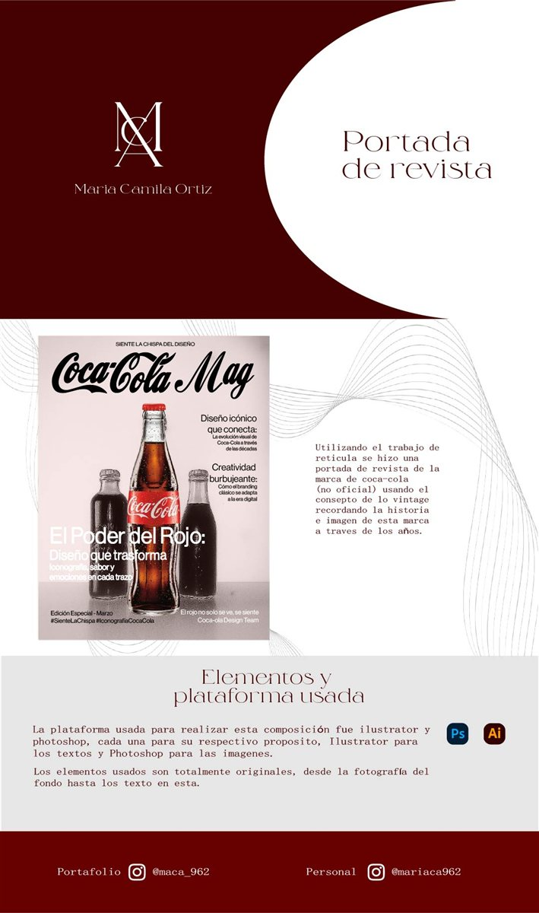
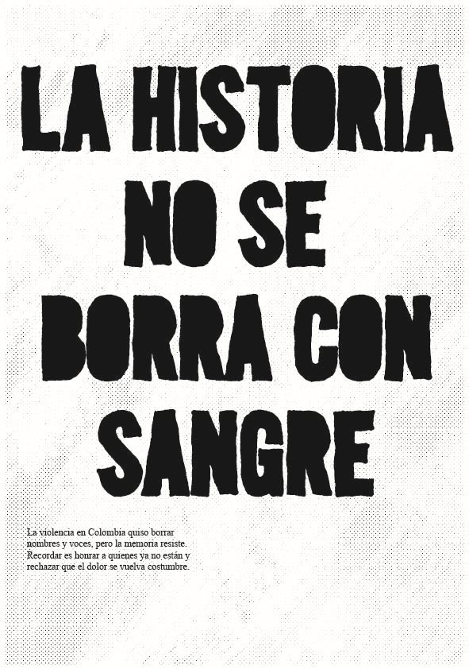
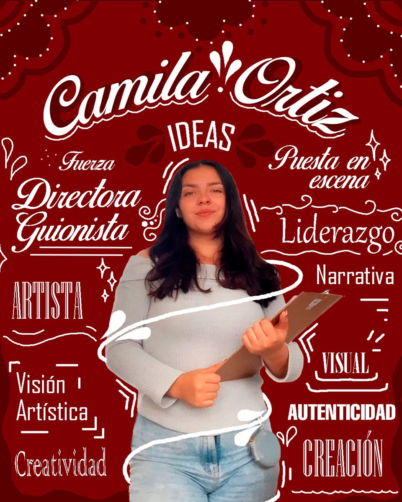

01Coca-Cola Mag
Editorial
Portadas de revista, carteles y sistemas de identidad, propios y de personaje. El hilo común es la retícula y la tipografía como herramientas para contar algo.

01Editorial
 02
02Cartel

03Cartel social

04Poster personal
 05
05Manual de marca
 06
06Ver proyecto →
Tres catálogos de producto — organización visual de información, composición y jerarquía tipográfica.